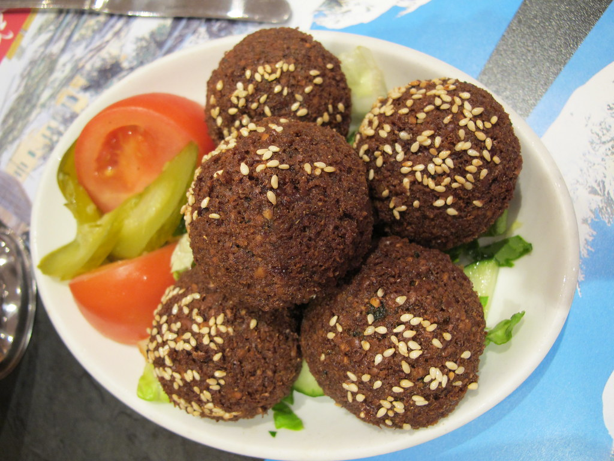

Home
Falafel

Description
The Falafel is one of top 3 iconic dishes of Egypt.
It is crispy delicous espicially with tomatoes.
You can eat for breakfast, dinner and as a snak.
Ingredients
- fava beans
- spices(optional)
Steps
- Soak the beans: Place dry chickpeas in a large bowl with plenty of cold water. Soak them for 18–24 hours, then drain and dry completely. Never use canned chickpeas, or the mixture will fall apart.
- Stir in a pinch of baking powder. Cover the bowl and put it in the fridge for 30 to 60 minutes to help the mixture hold its shape
- Scoop out portions of the mixture. Use your hands to press and form tight small balls or flat patti
- Fry: Heat neutral cooking oil in a deep pan to 375°F (190°C). Fry the falafel in small batches for 3 to 4 minutes until dark golden brown and crispy outside. Drain on paper towels.